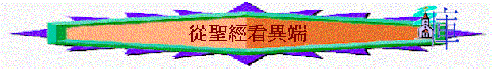

[ 認識道教ppt ] [認識佛教ppt ] [ 認識回教ppt ]
一.異端的危機
1.末世必發生
「因為將來有好些人冒我的名來，說：『我是基督』，並且要迷惑許多人。」太24:5
「你該知道，末世必有危險的日子來到。」提後3:1
2.受群眾歡迎
「人都說你們好的時候，你們就有禍了！因為他們的祖宗待假先知也是這樣。」路6:26
3.選民也被騙
「因為假基督、假先知將要起來，顯大神蹟、大奇事，倘若能行，連選民也就迷惑了。」太24:24
4.信徒也跟隨
「我希奇你們這麼快離開那藉著基督之恩召你們的，去從別的福音。那並不是福音，不過有些人攪擾你們，要把基督的福音更改了。但無論是我們，是天上來的使者，若傳福音給你們，與我們所傳給你們的不同，他就應當被咒詛。我們已經說了，現在又說，若有人傳福音給你們，與你們所領受的不同，他就應當被咒詛。」加1:6-9
∼向來跑得好信徒，也因異端而快離開主的道
5.離道反教現
「人不拘用什麼法子，你們總不要被他誘惑；因為那日子以前，必有離道反教的事，並有那大罪人，就是沉淪之子，顯露出來。」帖後2:3
6.結黨引紛爭
「他們曾對你們說過，末世必有好譏誚的人隨從自己不敬虔的私慾而行。這就是那些引人結黨、屬乎血氣、沒有聖靈的人。」猶1:18-19
7.奬賞被奪去
「不可讓人因著故意謙虛和敬拜天使，就奪去你們的獎賞。這等人拘泥在所見過的（有古卷：這等人窺察所沒有見過的），隨著自己的慾心，無故的自高自大，」西2:18
二.異端的字義
1.教門(Sect)
「大祭司和他的一切同人，就是撒都該教門的人，都起來，滿心忌恨，」徒5:17
「惟有幾個信徒、是法利賽教門的人，起來說：「必須給外邦人行割禮，吩咐他們遵守摩西的律法。」徒15:5
2.黨(heresies)
「在你們中間不免有分門結黨的事，好叫那些有經驗的人顯明出來。」林前11:19
3.異端(heresies)
「拜偶像、邪術、仇恨、爭競、忌恨、惱怒、結黨、分爭、異端、」加5:20
「從前在百姓中有假先知起來，將來在你們中間也必有假師傅，私自引進陷害人的異端，連買他們的主他們也不承認，自取速速的滅亡。」彼後2:1
∼今日基督教的定義:異端的定義：自稱為基督教團體/組織/基督徒群體，他們所傳的信仰卻和原先使徒所傳的(新約)有分別或更改的，就視為異端
三.異端的特質
1.假先知
「萬軍之耶和華說：「那日，我必從地上除滅偶像的名，不再被人記念；也必使這地不再有假先知與污穢的靈。」亞13:2
「且有好些假先知起來，迷惑多人。」太24:11
∼他們自認代表神傳講一些啟示或預言
2.假師傅
「從前在百姓中有假先知起來，將來在你們中間也必有假師傅，私自引進陷害人的異端，連買他們的主他們也不承認，自取速速的滅亡。」彼後2:1
∼他們自以為能教導別人，但卻是假的，引人走向滅亡之路
3.假弟兄
「又屢次行遠路，遭江河的危險、盜賊的危險，同族的危險、外邦人的危險、城裡的危險、曠野的危險、海中的危險、假弟兄的危險。」林後11:26
「因為有偷著引進來的假弟兄，私下窺探我們在基督耶穌裡的自由，要叫我們作奴僕。」加2:4
「那些人熱心待你們，卻不是好意，是要離間你們（原文作把你們關在外面），叫你們熱心待他們。」加4:17
∼似乎有弟兄般的熱情、親切，似乎有主內弟兄的名義及行為，卻是偷入教會，是假的
4.假基督
「因為假基督、假先知將要起來，顯大神蹟、大奇事，倘若能行，連選民也就迷惑了。」太24:24
∼自認是基督，模仿基督的樣式與說法，卻是假的！
5.假使徒
「那等人是假使徒，行事詭詐，裝作基督使徒的模樣。」林後11:13
∼他們裝作教會的領袖，自以為擁有使徒的權柄與能力，是神的僕人
6.說謊的
「誰是說謊話的呢？不是那不認耶穌為基督的嗎？不認父與子的，這就是敵基督的。」約壹2:22
7.真本相
「他們因有貪心，要用捏造的言語在你們身上取利。他們的刑罰，自古以來並不遲延；他們的滅亡也必速速來到（原文作不打盹）。」彼後2:3
「這些人是無水的井，是狂風催逼的霧氣，有墨黑的幽暗為他們存留。他們說虛妄矜誇的大話，用肉身的情慾和邪淫的事引誘那些剛才脫離妄行的人。他們應許人得以自由，自己卻作敗壞的奴僕，因為人被誰制伏就是誰的奴僕。」彼後2:17-19
A.貪心取利
B.放縱情慾
C.卻被挾制
四.異端的手段
1.假裝僕役
「那等人是假使徒，行事詭詐，裝作基督使徒的模樣。這也不足為怪，因為連撒但也裝作光明的天使。所以他的差役，若裝作仁義的差役，也不算希奇。他們的結局必然照著他們的行為。」林後11:13-15
2.偷入教會
「因為有偷著引進來的假弟兄，私下窺探我們在基督耶穌裡的自由，要叫我們作奴僕。」加2:4
「因為有些人偷著進來，就是自古被定受刑罰的，是不虔誠的，將我們神的恩變作放縱情慾的機會，並且不認獨一的主宰我們（或作和我們）主耶穌基督。」猶1:4
3.傳講異道
「若有人傳異教，不服從我們主耶穌基督純正的話與那合乎敬虔的道理，」提前6:3
4.怪異教訓
「你們不要被那諸般怪異的教訓勾引了去；因為人心靠恩得堅固才是好的，並不是靠飲食。那在飲食上專心的從來沒有得著益處。」來13:9
5.奇術迷惑
「因為假基督、假先知將要起來，顯大神蹟、大奇事，倘若能行，連選民也就迷惑了。」太24:24
「因為假基督、假先知將要起來，顯神蹟奇事，倘若能行，就把選民迷惑了。」可13:22
6.詭計欺騙
「使我們不再作小孩子，中了人的詭計和欺騙的法術，被一切異教之風搖動，飄來飄去，就隨從各樣的異端；」弗4:14
7.情慾勾引
「那偷進人家、牢籠無知婦女的，正是這等人。這些婦女擔負罪惡，被各樣的私慾引誘，常常學習，終久不能明白真道。」提後3:6-7
8.模仿基督
「耶穌說：「你們要謹慎，不要受迷惑；因為將來有好些人冒我的名來，說：『我是基督，』又說：『時候近了』，你們不要跟從他們！」路21:8
五.異端的道理
1.如何稱義?(救恩觀)
A.謹守日子
「你們謹守日子、月分、節期、年分。」加4:10
B.禁止嫁娶
「他們禁止嫁娶，又禁戒食物（或作：又叫人戒葷），就是神所造、叫那信而明白真道的人感謝著領受的。」提前4:3
C.禁戒食物
「他們禁止嫁娶，又禁戒食物（或作：又叫人戒葷），就是神所造、叫那信而明白真道的人感謝著領受的。」提前4:3
D.克制肉體
「這些規條使人徒有智慧之名，用私意崇拜，自表謙卑，苦待己身，其實在克制肉體的情慾上是毫無功效。」西2:23
*總結：靠行為
2.耶穌是誰？(基督觀)
A.自稱是基督
「因為將來有好些人冒我的名來，說：『我是基督』，並且要迷惑許多人。」太24:5
B.不認祂是主
「從前在百姓中有假先知起來，將來在你們中間也必有假師傅，私自引進陷害人的異端，連買他們的主他們也不承認，自取速速的滅亡。」彼後2:1
C.不認祂是成了肉身
「親愛的弟兄啊，一切的靈，你們不可都信，總要試驗那些靈是出於神的不是，因為世上有許多假先知已經出來了。凡靈認耶穌基督是成了肉身來的，就是出於神的；從此你們可以認出神的靈來。」約壹4:1-2
3.崇拜偶像?(天使/人觀)
A.崇拜天使
「不可讓人因著故意謙虛和敬拜天使，就奪去你們的獎賞。這等人拘泥在所見過的（有古卷：這等人窺察所沒有見過的），隨著自己的慾心，無故的自高自大，」西2:18
B.尊崇聖經偉人
∼例如初期教會仍有人將摩西的位置等同或甚至高於基督
4.主的日子?(末世觀)
A.主的日子現在就到
「我勸你們：無論有靈、有言語、有冒我名的書信，說主的日子現在（現在或作就）到了，不要輕易動心，也不要驚慌。」帖後2:2
B.主降臨的應許在那裡？
「第一要緊的，該知道在末世必有好譏誚的人隨從自己的私慾出來譏誚說：「主要降臨的應許在那裡呢？因為從列祖睡了以來，萬物與起初創造的時候仍是一樣。」」彼後3:3-4
5.另立權威(聖經觀)
「我勸你們：無論有靈、有言語、有冒我名的書信，說主的日子現在（現在或作就）到了，不要輕易動心，也不要驚慌。」帖後
2:2
「我向一切聽見這書上預言的作見證，若有人在這預言上加添什麼，神必將寫在這書上的災禍加在他身上；這書上的預言，若有人刪去什麼，神必從這書上所寫的生命樹和聖城刪去他的分。」啟
22:18-19
∼初期教會已出現了一些冒使徒的書信，今天有一些異端也會另立一些書籍等同及高於聖經的。
六.異端的分辨
1.憑生命的果子分辨
「你們要防備假先知。他們到你們這裡來，外面披著羊皮，裡面卻是殘暴的狼。憑著他們的果子，就可以認出他們來。荊棘上豈能摘葡萄呢？蒺藜裡豈能摘無花果呢？這樣，凡好樹都結好果子，惟獨壞樹結壞果子。好樹不能結壞果子；壞樹不能結好果子。」太7:15-18
∼假先知雖表面披羊皮混入屬神的群體中，但他們沒有從神而來的新生命，本質上仍是敗壞，從他們的生命就認出他們是否屬於神！
2.憑所傳的道理分辨
A.真的福音
「基督照我們父神的旨意，為我們的罪捨己，要救我們脫離這罪惡的世代。」加1:4
「既知道人稱義不是因行律法，乃是因信耶穌基督，連我們也信了基督耶穌，使我們因信基督稱義，不因行律法稱義；因為凡有血氣的，沒有一人因行律法稱義。」加2:16
「但有一件事，我向你承認，就是他們所稱為異端的道，我正按著那道事奉我祖宗的神，又信合乎律法的和先知書上一切所記載的，」徒24:14
a.基督
b.我們的罪
c.為我們的罪捨己
d.救我們脫離罪惡的世代
e.人稱義不是因行律法，
乃是因信基督
f.合乎聖經所記載的
B.別的福音
「我希奇你們這麼快離開那藉著基督之恩召你們的，去從別的福音。那並不是福音，不過有些人攪擾你們，要把基督的福音更改了。但無論是我們，是天上來的使者，若傳福音給你們，與我們所傳給你們的不同，他就應當被咒詛。我們已經說了，現在又說，若有人傳福音給你們，與你們所領受的不同，他就應當被咒詛。」加1:6-9
a.似乎是福音
b.更改了
c.不是福音，是別的
d.不同起初使徒所傳的
3.憑裡頭的靈來分辨
「親愛的弟兄啊，一切的靈，你們不可都信，總要試驗那些靈是出於神的不是，因為世上有許多假先知已經出來了。」約壹4:1
「親愛的弟兄啊，一切的靈，你們不可都信，總要試驗那些靈是出於神的不是，因為世上有許多假先知已經出來了。」約壹4:1
「聖靈明說，在後來的時候，必有人離棄真道，聽從那引誘人的邪靈和鬼魔的道理。」提前4:1
「因為你們都可以一個一個的作先知講道，叫眾人學道理，叫眾人得勸勉。先知的靈原是順服先知的；」林前14:31-32
「又叫一人能行異能，又叫一人能作先知，又叫一人能辨別諸靈，又叫一人能說方言，又叫一人能繙方言。」林前12:10
∼「那些靈」的靈是眾數(the
spirits)，假先知(false prophets)也是眾數，他們是錯誤及不真實的
∼聖經很多時候將先知與靈所在一起，在當時代，新約書卷仍未完全啟示完成，神會透過祂的靈將將來的事及神的道啟示及感動先知，他們會在聚會中接著次序將所得的啟示與感動傳講及會眾
∼但作者強調一切的靈都不可信，因為當時有假的先知已出現了，他們說神的靈感動他們傳講信息，但作者強調他們裡面受感的靈不是都出於神
∼出於神的只得一位，信徒要試驗(try
the spirits whether they are of God)那些靈是否從神而來
∼聖經曾題及不要試探神，但林前12:10也題及神也將分辨諸靈的恩賜賜給教會，所以信徒是不可試探神，但是可以分諸靈是否從神而來
∼究竟如何分辨呢？分別真與假靈的方法：
「凡靈認耶穌基督是成了肉身來的，就是出於神的；從此你們可以認出神的靈來。凡靈不認耶穌，就不是出於神；這是那敵基督者的靈。你們從前聽見他要來，現在已經在世上了。」約壹4:2-3
「你若口裡認耶穌為主，心裡信神叫他從死裡復活，就必得救。因為人心裡相信，就可以稱義；口裡承認，就可以得救。」羅10:9-10
A.認耶穌基督是成了肉身來的----出於神
∼針對當時的假先知及異端道理，他們否定耶穌的人性或神性，也指出祂不能完全救贖人
∼而「凡靈」既先知的靈所啟示的道理及靈本身
∼「認」----不單是相信，而是確實承認(confess)：
a.有耶穌
b.耶穌是基督，是能拯救世人的聖者，是彌賽亞，是要來的王，是從天上而來的
c.是成了肉身來----祂是聖者，道成肉身，實在有形有體的到世間，不是幻覺，是真實的
∼而若聖靈真是有此確認及接受，此靈也會啟示先知傳講，而先知必是傳講真實的事，和啟示的靈是一致的，此靈就是從神而來的
B.不認耶穌----不出於神，是那敵基督者的靈
∼若有靈不承認(也等於不信)耶穌，否定祂的神性及人性，否定祂是拯救者，也不信祂，也不啟示先知傳揚祂，就是那敵基的靈，不是出於神
∼敵基督者及敵基督者的靈是單數的，而啟示錄所形容那敵基督者仍未來，但牠的靈已在世上迷惑人，引導假先知傳揚謬誤的道理
4.憑他們離教來顯明
「他們從我們中間出去，卻不是屬我們的；若是屬我們的，就必仍舊與我們同在；他們出去，顯明都不是屬我們的。」約壹2:19
∼他們是曾在信徒(我們)中間，但後來出來了，離棄真道，一個真正屬神的人，是會持守到底，但他們至終出去了，顯出他們不屬信徒，是假的，也不屬教會
七.異端的結局
1.受咒詛
「但無論是我們，是天上來的使者，若傳福音給你們，與我們所傳給你們的不同，他就應當被咒詛。」加1:8
2.受審判
「從前在百姓中有假先知起來，將來在你們中間也必有假師傅，私自引進陷害人的異端，連買他們的主他們也不承認，自取速速的滅亡。」彼後2:1
3.終清除
「萬軍之耶和華說：「那日，我必從地上除滅偶像的名，不再被人記念；也必使這地不再有假先知與污穢的靈。」亞13:2
「那獸被擒拿；那在獸面前曾行奇事、迷惑受獸印記和拜獸像之人的假先知，也與獸同被擒拿。他們兩個就活活的被扔在燒著硫磺的火湖裡；」啟19:20
∼撒但會用偶像、假先知與污穢的靈迷惑人，但到末日，神會除去這些事情，人也不會記念偶像。
八.新約時代的異端----諾斯底派
「你們要謹慎，恐怕有人用他的理學和虛空的妄言，不照著基督，乃照人間的遺傳和世上的小學就把你們擄去。」西2:8
「小子們哪，如今是末時了。你們曾聽見說，那敵基督的要來；現在已經有好些敵基督的出來了，從此我們就知道如今是末時了。」約壹2:18
「我將這些話寫給你們，是指著那引誘你們的人說的。」約壹2:26
「親愛的弟兄啊，一切的靈，你們不可都信，總要試驗那些靈是出於神的不是，因為世上有許多假先知已經出來了。」約壹4:1
∼約壹2:18題及好些敵基督的出來，當時信徒不單受到猶太人的律法主義，羅馬的帝國主義，希臘的神話哲學思想衝激，他們也要面對異端的似是而非迷惑
∼而其中最衝激當時的信徒是「偽智派」(Gnostics----又稱諾斯底派)，新約很多經卷也是回應諾斯底派而寫的，他們有以下錯誤的看法與觀點：
1.知識是崇高
A.知識比道德更高尚
∼所以否認愛是基督徒是最高美德，而約翰卻指出愛才是認識神的印證。
∼他們也否認聖經的倫理教訓，知識才是最重要，所以約翰壹書常重覆「若有人說」的字眼，信徒不單停留在言語及知識中，更要遵守主的命令，行出義行，才能印證自己有永生。
B.福音中的奧秘，惟獨偽智派可了解
∼他們認為普通信徒只能瞭解福音中字面的意義，最奧秘的事唯有他們才能確知，但約翰壹書卻強調永生及信仰的真理是信徒們己曉得及確知的！
2.物質是極惡
∼當時也有一種二元論思想，認為神與物質有絕對的分別，宇宙萬物是惡的
∼他們認為至高神不會創造這樣萬惡的宇宙。
∼所以舊約創造宇宙的神，卻非至高的神，乃是低級的勢力。
3.眨低主基督
∼他們認為肉身是惡的，所以基督道成肉身是難以置信，所以有人說基督只是幻影，非實在的，有人說耶穌是從約瑟與馬利亞而生的，當耶穌受死，基督才降臨，但當耶穌受苦承擔人罪時，基督已離開，約翰壹書卻強調基督曾成了肉身來，是人親眼看過及摸過(約壹1:1)，他也曾受洗、受苦的(不是二分法)
4.可敬拜天使
∼神與物質有絕對的分別，因此，神和物質的世界之間不可能有接觸，神若要與物質世界接觸，必須造出一些與神和物質都可以有接觸的被造之物(比神低級)，而天使是其中一種，比神低但卻比人高，所以人要敬拜天使
〜天使是神人中間的連貫者，是從神產生的，有神的性情，所以也稱為「豐盛」或作「充滿」
〜但保羅在歌羅西書中指出神本性一切的豐盛都住在基督�堶情A不是從天使及人間的哲學中找到。
5.克制與放縱
∼他們認為身體是超道德的，所放縱情慾是沒有關係的。第二物質的身體是沒有真實價值的，所以人可以自己盡情的剋制也可以放縱，而諾斯底他們都比較於偏向於克自己身，所以追求苦待自己來克制肉體，可以勝過地上邪惡的物質
∼當然也有人認為「犯罪可加多經驗，增廣知識」，所以也可放縱情慾但，約翰卻強調與神相交的人，不可犯罪。
九.如何面對異端
1.自我防護
A.要謹慎
「耶穌回答說：「你們要謹慎，免得有人迷惑你們。」太
24:4
B.要禱告
「總要警醒禱告，免得入了迷惑。你們心靈固然願意，肉體卻軟弱了。」太
26:41
C.常存道
「論到你們，務要將那從起初所聽見的，常存在心裡。若將從起初所聽見的存在心裡，你們就必住在子裡面，也必住在父裡面。主所應許我們的就是永生。我將這些話寫給你們，是指著那引誘你們的人說的。」約壹2:24-26
∼「起初所聽見的」指所聽見的真理與道
∼「常存」--有「住」的意思，將道住在心中，不是短時期，是長時間，有深入的持守，不讓道離開。
∼而使徒寫此書是要他們持守過往所聽的道，因為在他們的時代，有引誘信徒的人出現，信徒要分辨真理與虛假提防被引誘的人
D.靠聖靈
「你們從主所受的恩膏常存在你們心裡，並不用人教訓你們，自有主的恩膏在凡事上教訓你們。這恩膏是真的，不是假的；你們要按這恩膏的教訓住在主裡面。」約壹2:27
∼主在升天前，將恩膏----聖靈賜給信徒，聖靈是會教導信徒想起真理，行在真理中，信徒在凡事上當留心聖靈教導，就能知道是與非，真與假，也不輕易隨從異端錯誤的教道
E.要成長
「直等到我們眾人在真道上同歸於一，認識神的兒子，得以長大成人，滿有基督長成的身量，使我們不再作小孩子，中了人的詭計和欺騙的法術，被一切異教之風搖動，飄來飄去，就隨從各樣的異端；」弗
4:13-14
2.面對之法
A.不容讓異道(加2：5，6：17)
「我們就是一刻的工夫也沒有容讓順服他們，為要叫福音的真理仍存在你們中間。」加
2:5
B.不接待異端
「凡越過基督的教訓、不常守著的，就沒有神；常守這教訓的，就有父又有子。若有人到你們那裡，不是傳這教訓，不要接他到家裡，也不要問他的安；」約貳
1:9-10
C.可溫柔勸戒
「用溫柔勸戒那抵擋的人；或者神給他們悔改的心，可以明白真道，叫他們這已經被魔鬼任意擄去的，可以醒悟，脫離他的網羅。」提後
2:25- 26
D.有時要爭辯
「親愛的弟兄啊，我想盡心寫信給你們，論我們同得救恩的時候，就不得不寫信勸你們，要為從前一次交付聖徒的真道竭力的爭辯。」猶
1:3
E.但謹慎小心
「弟兄們，若有人偶然被過犯所勝，你們屬靈的人就當用溫柔的心把他挽回過來；又當自己小心，恐怕也被引誘。」加
6:1
F.危險時躲避
「你該知道，末世必有危險的日子來到。因為那時人要專顧自己、貪愛錢財、自誇、狂傲、謗讟、違背父母、忘恩負義、心不聖潔、無親情、不解怨、好說讒言、不能自約、性情兇暴、不愛良善、賣主賣友、任意妄為、自高自大、愛宴樂、不愛神，有敬虔的外貌，卻背了敬虔的實意；這等人你要躲開。」提後
3:1- 5
附錄:
|
特點 |
香 港 基 督 教 會 |
天 主 教 |
|
人 如 何 稱 義？ |
1.受浸才得教 2.活出Bible，100%守 行為，作真門徒才得救。 |
1.除相信耶穌外、洗 禮、彌撒、善行、 順服教會與救恩有 關。 2.信心與行為是得救 的唯一方法 |
|
耶 穌 是 誰？ |
||
|
崇 拜 偶 像？ |
崇拜馬利亞，她是基督之母，無原罪，人可以依賴她，求她幫助，她可將人的代求轉達天父。 |
|
|
主 的 日 子？ |
||
|
其 它 |
每地方只有一間『真教會』他們就是那間真教會，所以會有『拉羊』行動 。 |
1.應該以對聖經 同樣的愛及尊重的 態度，對待傳統（教會的規條與教皇 口傳的傳統）。 2.教皇代表基督，有 絕對的權威，故當 絕對順服 。 |
[ 認識道教ppt ] [認識佛教ppt ] [ 認識回教ppt ]